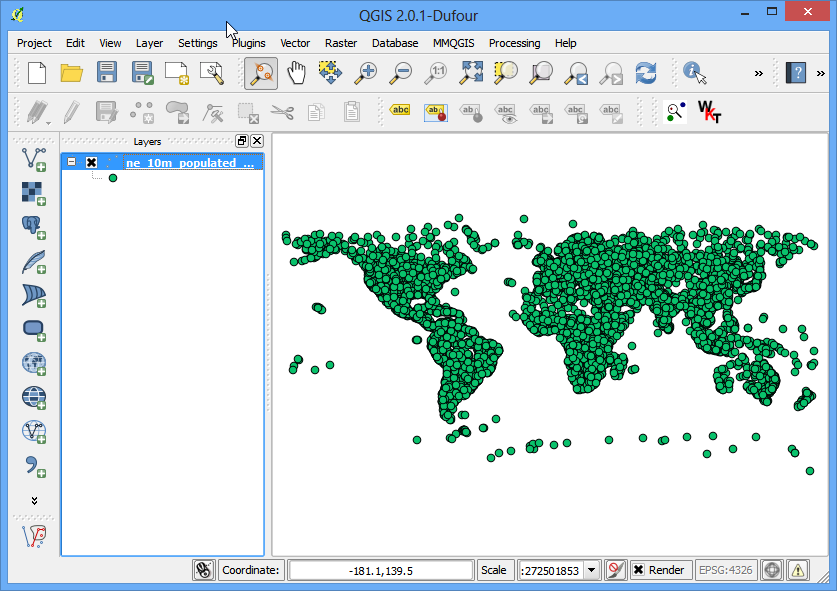
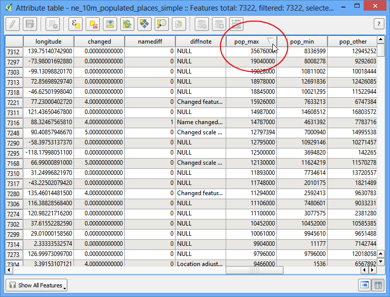

Basis opmaken en analyses van rasters
[ Download PDF A4 Letter ]
Veel wetenschappelijke waarnemingen en onderzoek produceren gegevenssets als rasters. Rasters zijn in essentie rasters van pixels die een specifieke waarde hebben toegewezen gekregen. Door rekenkundige bewerkingen op deze waarden uit te voeren, kan men enkele interessante analyses uitvoeren. QGIS heeft enkele ingebouwde mogelijkheden voor basisanalyses via Rasterberekeningen. In deze handleiding zullen we de basis voor het gebruiken van Rasterberekeningen verkennen en beschikbare opties voor het opmaken van rasters.
Overzicht van de taak
We zullen rastergegevens voor bevolkingsdichtheid gebruiken om gebieden in de wereld te zoeken en te visualiseren die een dramatische wijziging in de bevolkingsdichtheid hebben gezien tussen de jaren 1990 en 2000.
Andere vaardigheden die u zult leren
De gegevens ophalen
We zullen de gegevensset Gridded Population of the World (GPW) v3 van de Columbia University gebruiken. Specifiek hebben we de Population Density Grid voor de gehele wereld nodig in de indeling ASCII en voor de jaren 1990 en 2000.
Hier ziet u hoe u de relevante gegevens zoekt en downloadt.
Ga naar de downloadpagina Population Density Grid, v3 download page. Selecteer de Data Attributes als .ascii format, 1° resolution en 1990 year. Klik op Download. Op dit punt zou u een gratis account en inlog aan kunnen maken, of de knop Guest Download aan de onderzijde gebruiken om de gegevens direct downloaden. Herhaal het proces voor de gegevens van 2000 year.

U zult nu 2 zip-bestanden hebben gedownload.
For convenience, you can also download a copy of this data by clicking on following links:
gl_gpwv3_pdens_90_ascii_one.zip
gl_gpwv3_pdens_00_ascii_one.zip
Gegevensbron [GPW3]
Procedure
Open QGIS en ga naar .

Lokaliseer de downloade zip-bestanden. Houd de Ctrl-toets ingedrukt en klik op beide zip-bestanden om ze allebei te selecteren. Op deze manier bent u in staat om beide bestanden in één stap te laden.

Elk zip-bestand bevat 2 rasterbestanden. De a in de bestandsnaam geeft aan dat de tellingen van de bevolking werd aangepast om overeen te komen met de totalen van de UN. We zullen voor deze handleiding de aangepaste rasters gebruiken. Selecteer glds00ag60.asc als de laag om toe te voegen. Klik op OK.

De laag heeft geen CRS gedefinieerd, en omdat de rasters in lat/long zijn, kies EPSG:4326 als het coórdinaten referentiesysteem.

U zult soortgelijke dialoogvensters tweemaal zien langskomen, omdat we beide zip-bestanden hebben geselecteerd. Herhaal het proces en selecteer het raster glds90ag60.asc als de laag om toe te voegen.

Kies nogmaals EPSG:4326 als het CRS.

Nu zult u beide rasters zien geladen in QGIS. Het raster is gerenderd in grijswaarden, waar donkere pixels lagere waarden aangeven en lichtere pixels hogere waarden aangeven.

Elke pixel in het raster heeft een toegewezen waarde. Die waarde is de bevolkingsdichtheid voor dat raster. Klik op de knop Objecten identificeren om het gereedschap te selecteren en klik ergens in het raster om de waarde van die pixel te zien.

We zouden het moeten opmaken om het patroon van de bevolkingsdichtheid beter te visualiseren. klik met rechts op de laagnaam en selecteer Eigenschappen. U kunt ook dubbelkkikken op de naam in de inhoudsopgave om het dialoogvenster Laag-eigenschappen op te roepen.

Wijzig, op de tab Stijl, het Rendertype naar Enkelbands pseudokleur. Klik vervolgens op Classificeren onder Genereer nieuw kleurenpalet. U zult zien dat er 5 nieuwe kleurenwaarden worden gemaakt. Klik op OK.

Terug in het kaartvenster van QGIS zult u een als een heatmap gerenderde weergave van het raster zien. Herhaal het proces ook voor het andere raster.

Voor onze analyse willen we zoeken naar de gebieden met de grootste wijziging in de bevolking tussen 1990 en 2000. De manier om dit te bereiken is door te zoeken naar het verschil tussen de waarde van elke pixel voor het raster in beide lagen. Selecteer .

In het gedeelte Rasterbanden kunt u de laag selecteren door er op te dubbelklikken. De banden zijn vernoemd naar de naam van het raster, gevolgd door @ en het nummer van de band. Omdat onze rasters slechts 1 band hebben, zult u slechts 1 item per band zien. Rasterberekeningen kan rekenkundige bewerkingen toepassen op de pixels van de rasters. In dit geval willen we een eenvoudige formule invoeren om de bevolkingsdichtheid van 1990 af te trekken van die van 2000. Voer glds00ag60@1 - glds90ag60@1 in als de formule. Noem uw uitvoerlaag pop_density_change_2000_1990.tif en selecteer het vak naast Voeg resultaat toe aan project. Klik op OK.

Als de bewerking voltooid is ziet u de nieuwe laag geladen in QGIS

Deze visualisatie in grijswaarden is nuttig, maar we kunnen een veel meer informatieve uitvoer maken. Klik met rechts op de laag pop_density_change_2000_1990 en selecteer Eigenschappen.

We willen de laag zo opmaken dat waarden van pixels in bepaalde bereiken dezelfde kleur krijgen. Ga, vóór we daar verder mee gaan, naar de tab Metadata en bekijk de eigenschappen van het raster. Bekijk de minimum en maximum waarden van deze laag.

Ga nu naar de tab Stijl. Selecteer Enkelbands pseudokleur als het Rendertype onder Rendering van banden. Stel Kleurinterpolatie in op Discreet. Klik 4 keer op de knop Voeg handmatig waarden in om 4 unieke klassen te maken. Klik op een item om de waarden te wijzigen. De manier waarop kleurkaarten werken is dat alle waarden die lager zijn dan de opgegeven waarde zullen de kleur krijgen van dat item. Omdat de minimumwaarde in ons raster net boven -2000 ligt, kiezen we -2000 als het eerste item. Dit zal voor de waarden geen gegevens zijn. Voer de waarden en labels voor de andere items in zoals hieronder en klik op OK.

Nu zult u een veel krachtiger visualisatie zien waar u gebieden kunt zien met positieve en negatieve wijzigingen in de dichtheid van de bevolking. Klik op de knop Inzoomen en teken een rechthoek rondom Europa om die regio meer in detail te verkennen.

Selecteer het gereedschap Objecten identificeren en klik op de rode en blauwe regio’s om te verifiëren dat uw regels voor opmaak werken zoals bedoeld.

Laten we nu in deze analyse één stap verder gaan en gebieden zoeken met alleen negatieve wijzigingen in de bevolkingsdichtheid. Open .

Voer de expressie pop_density_change_2000_1990@1 < -10 in. Wat deze expressie zal doen is de waarde van de pixel op 1 zetten als die voldoet aan de expressie en op 0 als dat niet zo is. Zo zullen we een raster krijgen met een pixelwaarde van 1 waar een negatieve wijziging was en 0 waar dat niet zo was. Noem de uitvoerlaag negative_pop_change_2000_1990 en selecteer het vak naast Voeg resultaat toe aan project. Klik op OK.

Klik met rechts, als de nieuwe laag eenmaal is geladen, op de nieuwe laag en selecteer Eigenschappen. Op de tab Transparantie, voeg 0 toe als de Aanvullende ‘no data’ waarde. Deze instelling zal de pixels met de waarden 0 ook transparant maken. Klik op OK.

Nu zult u de gebieden met een negatieve wijziging in de bevolkingsdichtheid als grijze pixels zien.